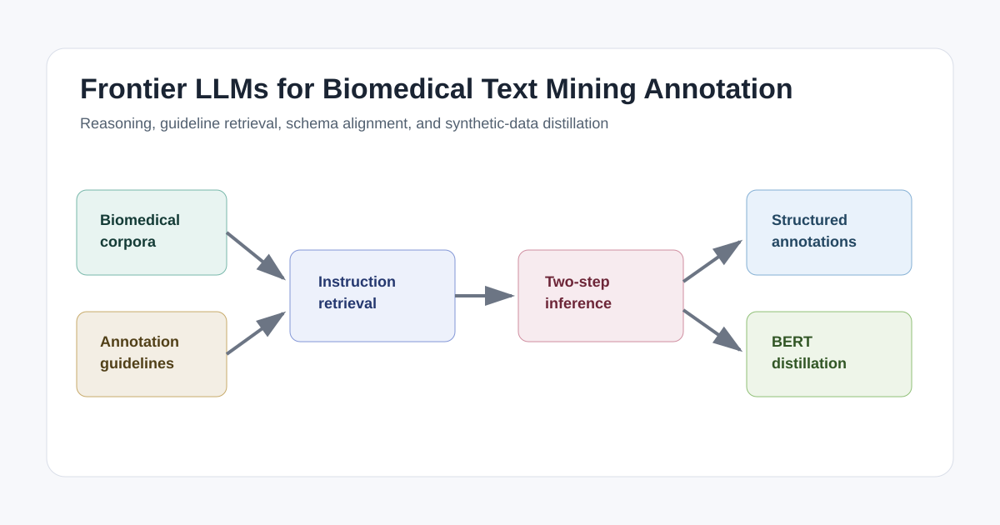

LLMs miss annotation nuance
Biomedical datasets contain corpus-specific boundary, hierarchy, relation, and label rules that are difficult to infer from general biomedical knowledge alone.
A guideline-aware evaluation of whether large language models can partially replace manual annotators across biomedical named entity recognition, relation extraction, and multi-label text classification.

Biomedical datasets contain corpus-specific boundary, hierarchy, relation, and label rules that are difficult to infer from general biomedical knowledge alone.
The pipeline dynamically extracts relevant instructions from annotation guidelines and injects them into the task context.
LLM-generated labels can train smaller BERT-based models, making LLM-assisted annotation more practical for production settings.
The study argues that replacement is possible only in a partial, workflow-aware sense. The strongest setup combines structured prompting, separate reasoning and formatting steps, and task-specific guideline retrieval.
LLMs struggle with implicit dataset rules, output schemas, and guideline adherence.
Two-step inference preserves reasoning before converting answers into strict formats.
Human annotation can shift toward auditing, calibration, and guideline refinement.
| Task | Datasets | Repository assets |
|---|---|---|
| Named entity recognition | BC5CDR-Chemical, BC5CDR-Disease, NCBI-Disease | dataset/, prompt/BC5CDR-NER.py, prompt/NCBI-Disease.py |
| Relation extraction | BC5CDR relation extraction, BioRED | prompt/BC5CDR-RE.py, prompt/BioRED.py |
| Multi-label text classification | LitCovid, Hallmarks of Cancer | prompt/LitCovid.py, prompt/HoC.py, evaluation scripts |
Partially. The paper supports LLM-assisted annotation workflows rather than unconditional replacement, especially when guideline retrieval and schema checks are used.
It provides prompts, datasets, and scripts for evaluating frontier large language models as biomedical text-mining annotators across NER, relation extraction, and multi-label classification.
LLMs can miss dataset-specific annotation nuance, lose reasoning quality under strict output formats, and fail to follow exact annotation schemas.
They encode dataset-specific rules that cannot be recovered reliably from general biomedical knowledge or a few examples.
It retrieves relevant guideline rules at inference time so the model can resolve edge cases and align outputs with the target corpus schema.
The model first reasons about the annotation decision, then separately formats the answer into the required schema.
Distillation tests whether expensive frontier LLM annotation can produce synthetic data for smaller, deployable biomedical models.
Use frontier LLMs as guideline-aware annotator assistants with schema validation and selective human review.